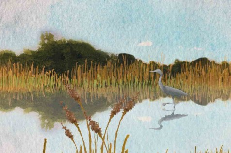
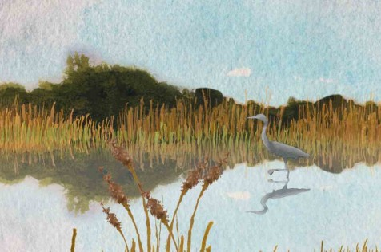
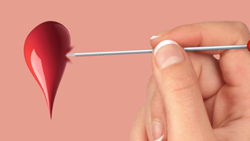
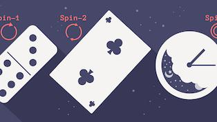
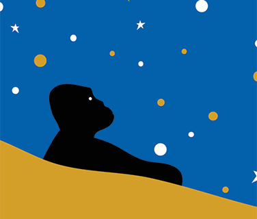

ISSUE 079
Catalysts
Agents of change
READ MORE

SCROLL DOWN
THE NAUTILUS SPOTLIGHT
WHY THE LAWS OF PHYSICS ARE INEVITABLE
Channels
TUNE IN TO NAUTILUS DEEP DIVE PORTALS
BIOLOGY+BEYOND

Making Sense of the Genome, at last
Women in Science & Engineering

Your Brain Is On the Brink of Chaos
QUANTA ABSTRACTIONS

Mathematicians Calculate How Randomness Creeps In
EARTH

The Deep Time of Walden Pond
THINK LIKE A SCIENTIST

The Best Burger Place is a Lab
cosmos
How Much Should Expectation Drive Science?
POETRY IN SCIENCE


On Observation and Imagination
Aging

Yes, Life in the Fast Lane Kills You
SCIENCE PHILANTHROPY ALLIANCE

Taking to the Stars
MPNuero

Understanding the Brain with the Help of Artificial Intelligence
Popular On Nautilus
Most Read Most Shared
 1 Does Theranos Mark the Peak of the Silicon Valley Bubble?
 2 The Smaller the Theater, the Faster the Music
2 The Smaller the Theater, the Faster the Music3 What Time Feels Like When You're Improvising
The neurology of flow states.
BY HEATHER BERLIN
The neurology of flow states.
BY HEATHER BERLIN
4 A New View of Time
Introducing the Nautilus Time Project.
BY BETH JACOBS & LEE SMOLIN
Introducing the Nautilus Time Project.
BY BETH JACOBS & LEE SMOLIN
5 She'll Text Me, She'll Text Me Not
The science of waiting in modern courtship.
BY AZIZ ANSARI & ERIC KLINENBERG
The science of waiting in modern courtship.
BY AZIZ ANSARI & ERIC KLINENBERG
6 When Bad Things Happen in Slow Motion
Is there more to our experiences of time than the fables of memory?
BY IVAN AMATO
Is there more to our experiences of time than the fables of memory?
BY IVAN AMATO
Facts So Romantic
SCIENCE HAS A POWERFUL VOICE IN TODAY'S CULTURE.
SO WHAT IS IT SAYING?

IDEAS
Why the Laws of Physics Are Inevitable
Reprinted with persmission from Quanta Magazine's abstractions blog. Compared to the unsolved mysteries of the universe, far less gets said about one of the most profound facts to have...
READ MORE
IDEAS
Why the Laws of Physics Are Inevitable
Reprinted with persmission from Quanta Magazine's abstractions blog. Compared to the unsolved mysteries of the universe, far less gets said about one of the most profound facts to have...
READ MORE

BIOLOGY
Do Butterflies Challenge the Meaning of Species?
What is a species? It's a question that has agonized scientists since well before Darwin. With some exceptions, the thinking has landed on an evidently firm reproductive barrier: Members...
READ MORE

MATTER
Hologram Within a Hologram Hints at Fate of Black Holes
Reprinted with permission from Quanta Magazine's Abstractions blog. Like cosmic hard drives, black holes pack troves of data into compact spaces. But ever since Stephen Hawking calculated...
READ MORE

BIOLOGY
Where to See the Real Living Dead
Talk of "Mother Trees," from a scientist studying plant life, can sound fanciful, like something out of a fairytale. Suzanne Simard is here to tell you that it's not. For the past...
READ MORE
Listen To Nautilus
NARRATED VERSIONS OF OUR STORIES

BIOLOGY
Turning Back The Clock on Human Evolution
By Amy Maxmen
BIOLOGY
Turning Back The Clock on Human Evolution
By Amy Maxmen

BIOLOGY
Yes, Your Brain Does Process Information
By Brian Gallagher

CULTURE
Why the Russions decapitated Major Tom
By Roberto Kaz
Nautilus Prime
GET THE FULL NAUTILUS DIGITAL EXPERIENCE

Like Nautilus? You'll love Nautilus Prime
Unlimited online reading Read it all, whenever, wherever, and however you like.
Ad Free Get a pristine, ad-free reading experience.
Tablet editions All the content and design of our award-winning print magazine, in PDF format --perfect for reading on your tablet or desktop.
eBook editions We've made each monthly issue into an eBook, compatible with most e-readers.
Event Access Prime members get priority access to Nautilus events.
Current print subscriber?
You're already a Prime member
Unlimited online reading Read it all, whenever, wherever, and however you like.
Ad Free Get a pristine, ad-free reading experience.
Tablet editions All the content and design of our award-winning print magazine, in PDF format --perfect for reading on your tablet or desktop.
eBook editions We've made each monthly issue into an eBook, compatible with most e-readers.
Event Access Prime members get priority access to Nautilus events.
Current print subscriber?
You're already a Prime member